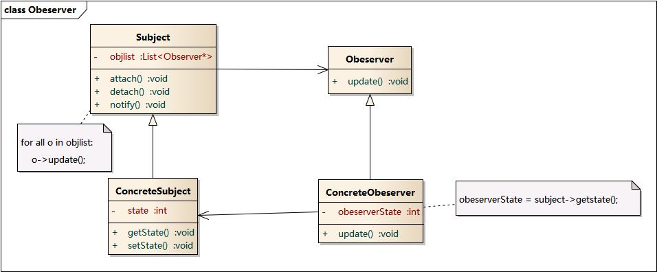
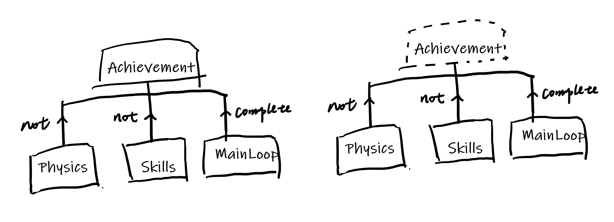

0x00
新坑《游戏编程模式》（作者 Robert Nystrom）。
在 Unity 下，用 C# 做了简单的实现，传送门：
链接：https://pan.baidu.com/s/1q2j5er-NrxQqJKYSc4TM2w
提取码：8eq2
其他模式传送门：
命令模式
本来是考虑用学到的每一个模式作为框架来做成游戏原型，现在这个计划还没有搁浅，只是觉得先做一些小练习循序渐进吧。
0x01 观察者模式
“在对象间定义一种一对多的依赖关系，以便当某对象的状态改变时，与它存在依赖关系的所有对象都能收到通知并自动进行更新。”
在这里发生改变的对象就是被观察者（或称为观察目标，被观察对象，Subject），被通知的对象即为观察者。观察者之间没有相互之间的联系，被观察者只负责发出通知，可以随时根据需要增加或移除观察者（模式动机）。
观察者模式还有很多名字，发布-订阅（Publish/Subscribe）模式、模型-视图（Model/View）模式、源-监听器（Source/Listener）模式、从属者（Dependents）模式。
来，类图：

听到『观察者模式』，很多人会想到“事件”，“消息”，甚至“数据绑定”，但其实并不是一回事。
0x02
观察者模式非常适合处理不相关的模块之间的通信问题。在单独的模块中并不适合使用观察者模式。
一个非常适合的例子就是游戏中很常见的成就系统了。
通常在达成成就时，会有一系列的条件的判断，可能会同时涉及到多个模块，比如物理系统，游戏逻辑等等。如果要在各个模块中静态的处理成就，不仅成就系统会分散在众多模块当中，同时也像胶水一样将所有模块粘在了一起，修改这种耦合严重的代码就会变得异常困难了。
比如：“不使用飞行秘笈，脚不着地地完成一关”的成就很可能涉及了物理系统，技能模块和游戏循环三个部分的判断。如果静态编码我们可能会使用这样一个逻辑：在物理相关的模块中，提供一个检测是否落地的方法，并保持一个是否曾经落地的状态变量；在技能模块中类似，检查是否使用过飞行秘笈；最后在游戏循环中，在一关结束时，过关了并且没有达成此成就（可能是由成就系统提供的方法，某成就是否达成的检查），便对上述两个条件的状态进行查询，最后来判断是解锁成就（也应该是成就系统提供的方法吧，解锁某个成就，并进行一些 UI 的视效），或者清空上述的状态。怎么样，在这个例子中成就系统并没有深入到物理和技能模块中（只是类似实现最后判断的位置），但和游戏循环耦合在一起，甚至如果要修改 UI，声效等等，最终会在游戏循环的逻辑中形成一张复杂的静态调用网（调用了上面所有的系统模块中提供的方法）。
观察者模式就可以解决类似这种本来不相关的模块之间的通信，当在其他模块中达成了某种我们所关心的状态变化时，观察这些变化的观察者就会收到这个变化的信息，从而进行接下来的操作。
0x03
观察者模式的典型应用有前面说的“成就系统”以及 UI 系统。
如果用观察者模式实现前面所说的“不适用飞行秘笈，脚不着地地完成一关”的成就，那么首先要明确的是，所有和成就相关的解锁，判断都是在成就系统模块内部完成的，而物理模块中“没落地”，以及技能模块中“没使用”的判断时机较难提供（所以在上面的例子中是在成就达成的位置，一关结束进行判断的），因此首先减少耦合最严重的部分，游戏循环在一关完成时，通知成就系统，而成就系统可以自己保存其他需要观察的模块的状态，并判断是否解锁相关的成就。相应的，成就模块作为被观察对象在成就达成时通知 UI 模块与音频模块，执行可能需要执行的，成就系统并不关心的操作即可。

这样，当我们要修改成就系统，或删除整个成就系统时，甚至可以不去修改这些相关的模块，因为这些模块只是发出了通知，开销也只是对所有观察者的一次遍历而已（看一看类图中的描述）。当然，如果删除了观察者，而被观察对象还保留着观察者的引用这种情况，是要进行处理的啊。
0xff
我很容易陷入，为什么这样，究竟好在哪里这种刨根问底的细节中，真的是因为笨，所以一定要想出一个场景，再按照自己所想推论一番，可能我是经验学习的类型吧。